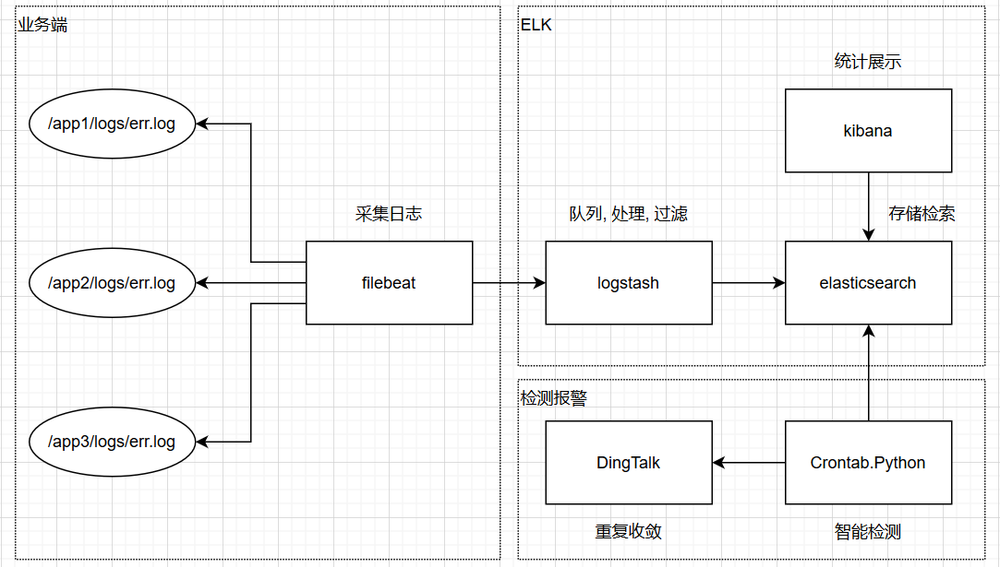
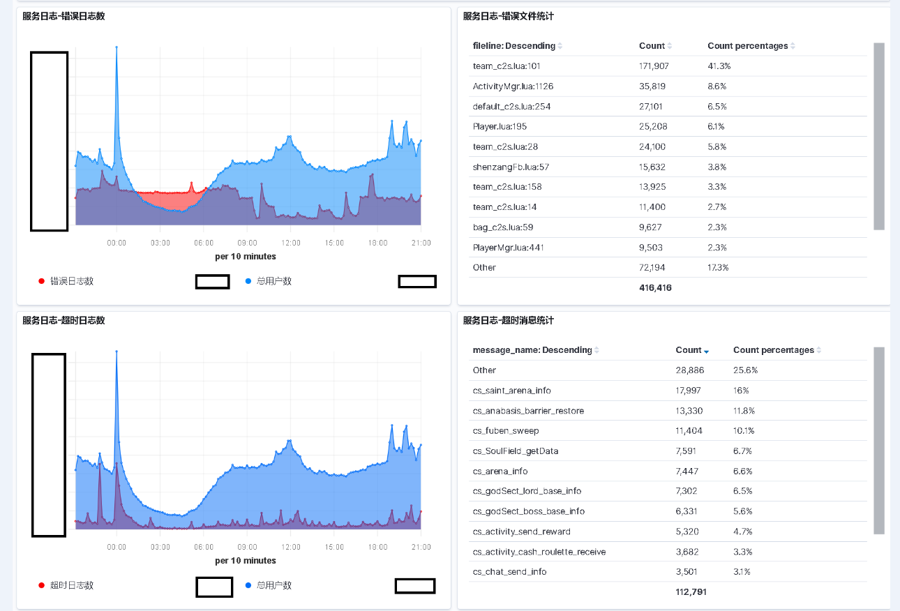
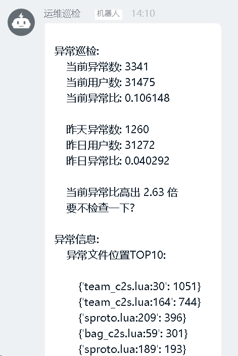

问题
1 | 一般情况下 |
方案
1 | 我们采用目前主流的ELK方案来解决这个问题 |

实施
filebeat
1 | 1. 使用Saltstack部署filebeat并且以后主机上线后会自动部署 |
logstash
先来看看配置文件
1 | # 多少个干活的 |
elasticsearch
1 | 配置就不说了, 都是标配 |
kibana
1 | 主要使用的是TSVB组件和TABLE组件 |
监控检测
1 | 前面也提到为什么我们没有使用es的watch功能 |
报警通知
1 | 我们在DingTalk上封装了一层接口 |
效果
先看效果, 再谈疗程(屏蔽业务数据)
统计效果

监控效果

1 | 这里说说为啥会有个用户数的指标. |
总结
1 | 首先这个系统做下来来, 用过的研发都说好. |